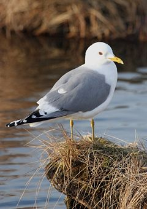
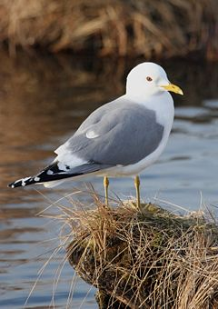

| Common Gull | |
|---|---|
|  | |
| Adult Mew Gull. Anchorage Coastal Wildlife Refuge, Alaska. | |
| Conservation status | |
| Binomial name | |
| Larus canus Linnaeus, 1758 |
| Common Gull | |
|---|---|
|  | |
| Adult Mew Gull. Anchorage Coastal Wildlife Refuge, Alaska. | |
| Conservation status | |
| Binomial name | |
| Larus canus Linnaeus, 1758 |
The Common Gull (European and Asian subspecies; see below) or Mew Gull (North American subspecies) Larus canus is a medium-sized gull which breeds in northern Asia, northern Europe and northwestern North America. It migrates further south in winter.[2] Its name does not indicate that it is an abundant species, but that during the winter it feeds on common land, short pasture used for grazing.[3]
Adults are 40-46 cm long, obviously smaller than the Herring Gull, and slightly smaller than the Ring-billed Gull, also differing from this in its shorter, more tapered bill with a more greenish shade of yellow, as well as being unmarked during the breeding season. The body is grey above and white below. The legs are greenish-yellow. In winter, the head is streaked grey, and the bill often has a poorly-defined blackish band near the tip (sometimes sufficiently obvious to cause confusion with Ring-billed Gull). They have black wingtips with large white "mirrors". Young birds have scaly black-brown upperparts and a neat wing pattern, and grey legs. They take two to three years to reach maturity. The call is a high-pitched "laughing" cry.[2][4]

{kind=link}